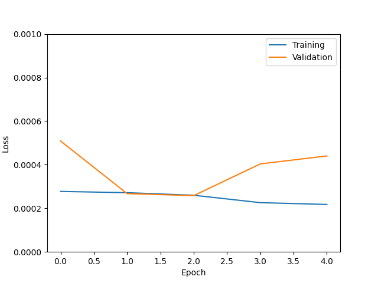
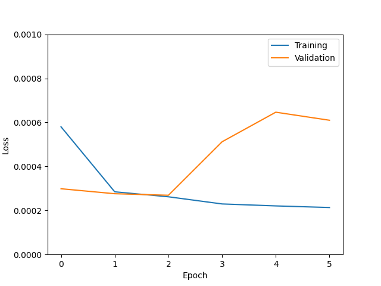

Tables of UNet runs
Explanation
- Code base: Everything refers to the code that evolved out of Bryan's version of the UNet, unless otherwise specified.
- Resolution: Everything is high resolution unless otherwise specified. "Low" refers to 320x320 pixels of 0.02 arcsec each. "High" refers to 640x640 pixels of 0.01 arcsec each.
- Channels: How many channels are in the first convolution block? All the rest of the numbers of channels are determined proportionally. Fiducial value is 32.
- Training size: Fiducial value is 5*10^5.
- Dropout: Fiducial value is 10%.
- Batch size: Fiducial value is 4.
- Concentration: Concentration is always 60 unless otherwise noted.
- Kernel: Size of convolutional kernels. Fiducial value is 3.
- True positive rates: What are the true positive rates corresponding to a false negative rate of 10%? The four numbers are for the mass bins in increasing order: 10^8-10^8.5, 10^8.5-10^9, 10^9-10^9.5, 10^9.5-10^10.
We will start with the UNet that has performed best so far and vary hyperparameters one at a time. This table mostly shows runs that we just started, so results including the loss curves are not ready yet.
New table
| UNet | Channels | Training size | Dropout | Batch size | Kernel | True positive rates | Comments | Loss curve |
|---|---|---|---|---|---|---|---|---|
| Fiducial (Best as of Oct 24) | 32 | 5*10^5 | 10% | 4 | 3 | 0.223, 0.477, 0.697, 0.870 | This run gave us our best results as of Oct 24. All the other runs on this table are based on it, modifying one property at a time. | |
| More data | 32 | 10^6 | 10% | 4 | 3 | 0.207, 0.471, 0.685, 0.864 | Same as fiducial, but with twice as much data. |  |
| More channels | 64 | 5*10^5 | 10% | 4 | 3 | (training...) | Same as fiducial, but twice as many channels in each block. |  |
| No dropout | 32 | 5*10^5 | 0% | 4 | 3 | 0.196, 0.435, 0.679, 0.864 | Same as fiducial, but no dropout. | |
| Batch size 8 | 32 | 5*10^5 | 10% | 8 | 3 | 0.194, 0.420, 0.671, 0.847 | Same as fiducial but double the batch size. | |
| Dropout 20% | 32 | 5*10^5 | 20% | 4 | 3 | 0.238, 0.501, 0.706, 0.877 | Same as fiducial but 20% dropout instead of 10%. |  |
| Kernel size 5 | 32 | 5*10^5 | 20% | 4 | 5 | 0.126, 0.243, 0.523, 0.763 | Same as fiducial, but larger kernel size. Perhaps changing the kernel size is too much of a change. | |
| Batch size 16 | 32 | 5*10^5 | 10% | 16 | 3 | 0.238, 0.489, 0.713, 0.879 | Same as fiducial but batch size 16. |  |